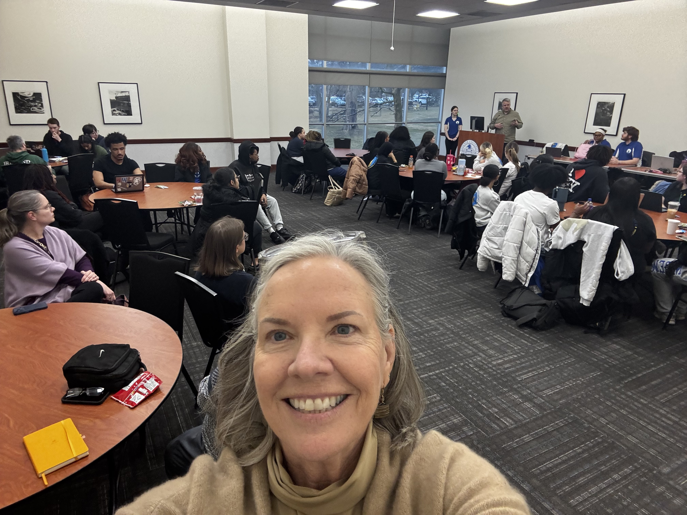

Organized by the Student Government Association and facilitated by SGA Vice President Melanie Spielberger, the Student Forum brought together approximately 75 students and a dozen faculty and staff in five simultaneous small-group discussions in the Webb Room of the University Center. Participants spent 90 minutes in student-led conversations guided by prepared questions.
The conversations were candid and wide-ranging—students and faculty wrestling together with real tensions around learning, integrity, and what AI means for their respective roles. Senior university leadership participated as room members and listeners. Rather than a confrontation between skeptics and enthusiasts, the forum surfaced something more interesting: a campus community genuinely thinking through hard questions together.
Themes are ordered by breadth—how many of the five discussion rooms independently raised each topic.
"You don't expect me to use AI; I should expect the same of you."
"Just talk to students."
"AI cannot replace human empathy, creativity, imagination, care."
"It gets rid of the point of spending money for college if professors are not genuinely caring about the students."
University leadership who participated noted being struck by two things: first, that students were more analytically sophisticated than expected; and second, that faculty and students shared remarkably similar fears about AI. That convergence is itself significant—this is not a faculty-versus-students problem. It is a shared institutional challenge that both groups are navigating with incomplete information, under real pressure, and with genuine stakes. A campus conversation that brings both groups into the same room is exactly the right starting point.